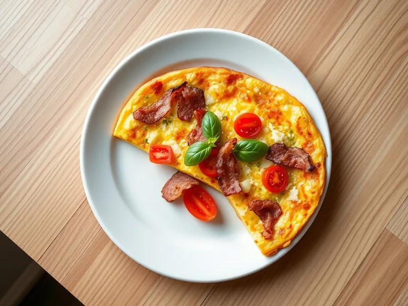

Фриттата с беконом и помидорами
Толстый итальянский омлет с хрустящим беконом, помидорами и пармезаном
25 мин3 порц.424 ккал на порциюБ 27 · Ж 32 · У 6Итальянская кухня
Открыть в приложении: порции, таймеры, список покупок
Продукты на 3 порц.
- Яйцо куриное6 шт
- Бекон100 г
- Помидоры2 шт
- Лук репчатый0,5 шт
- Пармезан30 г
- Молоко50 мл
- Оливковое масло1 ч. л.
- Соль1 щеп.
- Перец чёрный молотыйпо вкусу
- Базилик по желаниюпо вкусу
Как готовить
- Разогрейте духовку до 180 °C (средний жар). Нарежьте бекон полосками, лук тонкими полукольцами, помидоры кружочками.
- Смажьте маслом сковороду с металлической ручкой и обжарьте бекон на среднем огне 4 минуты до хруста. Добавьте лук и жарьте ещё 3 минуты до мягкости.
- Взбейте яйца с молоком, половиной тёртого пармезана, солью и перцем.
- Залейте бекон яйцами, разложите сверху кружочки помидоров и готовьте на среднем огне 3 минуты, пока края не схватятся.
- Посыпьте остатками пармезана и поставьте сковороду в духовку на 8-10 минут, пока центр не станет упругим, а верх не подрумянится.
- Дайте постоять 2 минуты, нарежьте на клинья и украсьте базиликом.
Совет. Если сковороды с металлической ручкой нет, доведите фриттату под крышкой на слабом огне 8-10 минут.